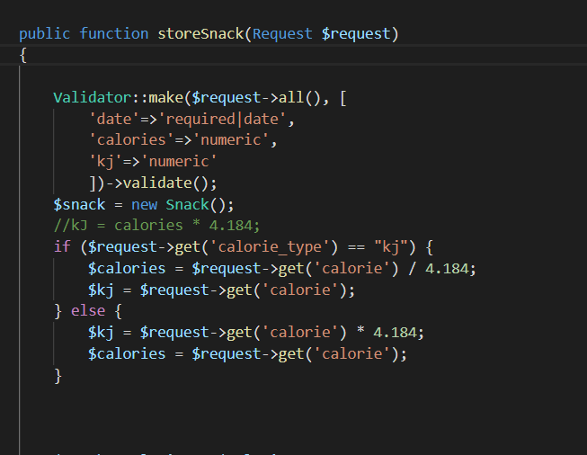
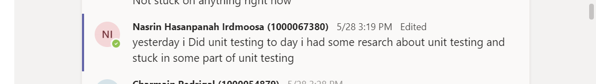

During this sprint, we added some more functionality to our website. I did pair programming In this sprint. I worked with one of my group members in coaching. I worked in a pair
during this sprint and my teammate was very helpful since I wasn't familiar with writing query.
In some points I was stuck in writing query and so I got help our scrum master to fix my problem.

I wrote queries in laravel for the first time. Due to the lock down, we had to start communicating online with my teammates from the middle of this sprint. I used the Teams platform which was very helpful for us to do the projects as a team. Also I was in contact with my teammates via social media and email.
I think pair programming is part of the agile because it increased the speed of working in the tasks.
During this sprint our standup meeting was changed to being online due to the lockdown situation. After the online standup meetings, I wrote what I have done and which areas I had a problem to
the group to avoid any misunderstanings. Also we had an efficiant conversation with our client online. Also in the beginning of each sprint I tried to
explain my role, such as, what i'm going to do and how I am going to work with my team to have a better understanding of
what the client wants exactly.

I did well:
during this sprint I had a better understanding about git and I was able to use git better than sprint1.
I could done better:
I need to improve working with laravel in areas such as using the controller,route and views. I was not very active in comminucation with my team I have to communicate more as communication is very important to get the work done more efficiently with a higher quality.
I learnt:
I learnt writing queries and how I can put this query into a variable; however, this was slightly difficult for me to learn.
barriers
The barrier for this sprint was lockdown because I started off working face to face with my team partner, but after lockdown we had to work together online. This made it a bit dificult for me because I didn't have any previous experience working for a project online so I wasn't able to finish this sprint. I have to figure out how to work more efficiently with my team for the rest of the semester.